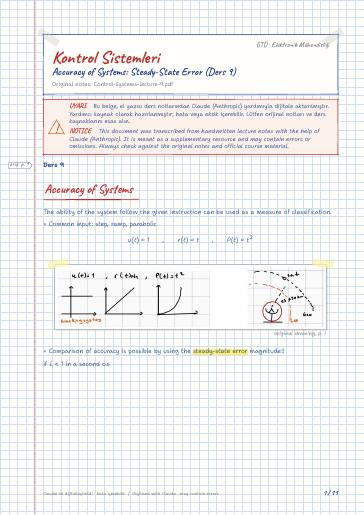

Kontrol Sistemleri · Dijital ders notu
Accuracy of Systems: Steady-State Error (Ders 9)
- Ders
- Kontrol Sistemleri (ELEC322)
- Dönem
- 6. Dönem · 2023–2024 Bahar
- Biçim
- PDF · 11 sayfa · 0,3 MB · el yazısı görünümlü LaTeX
- Orijinal not
- Control-Systems-lecture-9.pdf

The digital notes were created from the handwritten notes with the help of Claude (Anthropic); they are meant as a supplementary resource and may contain errors. Always rely on the original notes and the official course materials.
Bu notta neler var?
- Accuracy of Systems
- Validity of final value theorem
- Steady state error for disturbance
- Sensitivity
Notun metni
Düz metin olarak göster (formüller ve çizimler yoktur)
Accuracy of Systems
The ability of the system follow the given instruction can be used as a measure of classification.
Common input: step, ramp, parabolic
Comparison of accuracy is possible by using the steady-state error magnitude!!
Validity of final value theorem
If the poles are in zone 1 so it can't have final value
Only works with Zone III and zone IV
G(s) : open loop TF for unity feedback
In most cases the most integrator is 3
Accuracy of systems
case 2) input is ramp
But we have to check stability
k=6 is the max possible k here !!!
so max e_ss=0,33 because the system have to be stable because final value theorem is not working with unstable systems.
Steady state error for disturbance
because it is negative we can decrease error with it
Design k_1 and k_2 so that
this system order is 3 by finding characteristic equation.
The degree to which changes in the system parameters affect system T.F. and hence performance (error, stability, …) of the system
This means it's low sensitive to a
Average sensitivity : 65%200%<1 (Reduced sensitivity)
Check the sensitivity of ss. error w.r.t. parameter 'k'
for delta also